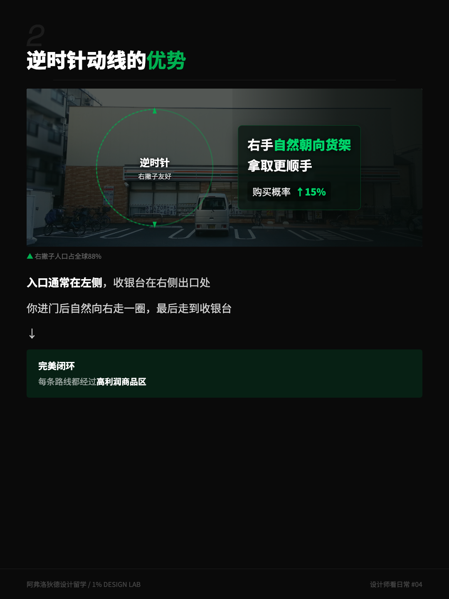
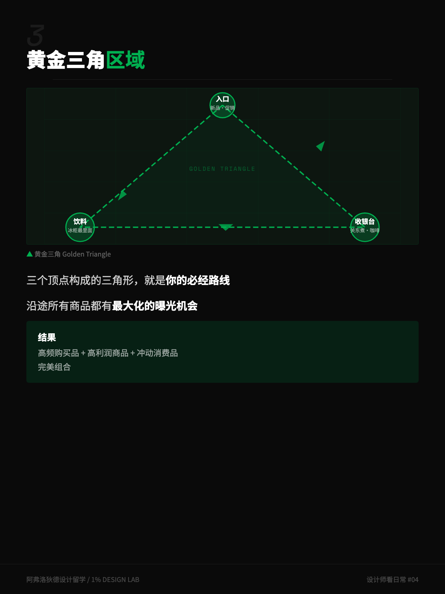

There's a 7-Eleven downstairs from my apartment, small enough that from the door you can see the drink cooler at the far wall. One night I went down to buy a bottle of water. Just water. I walked to the back of the store for the bottle, followed the shelves around to the register, and was out again in under four minutes. In my hands: a rice ball, a bag of chips, and a cup of fresh-ground coffee. I'd gone down for the water, and by the end the water felt like the afterthought.
After this happened enough times, I switched the suspect from me to the store. Thirty-odd square meters, three thousand products, and a person who walks in wanting nothing but water. Every step lands on a line somebody else drew.
Written for WeChat or Xiaohongshu, this topic slides easily into "how unhinged convenience store design is." This time I wanted a different way through: check the data first, then take the design apart. The numbers circulating online I reopened like cold cases, and what I dug up was interesting.
Before writing, I threw the keywords into Google Trends and listened to the search logs testify first. US search interest in "7-eleven" has climbed close to doubling over the past three months, and the climb looked suspicious. Click into the fastest-rising related queries and it's all "7-eleven location downsizing" and "north america store closures." North Americans are searching for its store closures. In Japan at the same moment, the parent company announced ¥300 billion starting in 2026 to remodel 5,000 stores, with extending the checkout counter named as one of the key moves.
Same company, shrinking on one side and pouring money in on the other; that contrast is where this piece starts. In North America, 7-Eleven learned the big, stock-everything gas-station model. In Japan it polished a small, tightly-edited micro-space. American stores are closing, Japanese stores are being remodeled, and most of the remodel money goes into a route under your feet that you can't see.
What this piece takes apart is the flow design of that 30㎡. Four mechanisms, one at a time.
1. Counterclockwise: a store designed for right-handers
The classic 7-Eleven layout runs counterclockwise. Entrance on the left, checkout on the right at the exit. You drift in, curve right, walk the shelves, and end up standing at the register, a closed loop.
Why counterclockwise? The most-circulated explanation points at right-handers. Right-handers tend to turn right on entering, and walking counterclockwise keeps your right hand toward the shelves the whole way. Grabbing things is easy, and the odds of lingering and touching go up.
The direction itself is documented. Retail researcher Paco Underhill recorded a large body of store observation in Why We Buy and found that customers consistently bear right after entering, a tendency he named "invariant right." His consulting firm, Envirosell, has spent decades doing exactly this in physical stores: setting up cameras, counting how people walk.
Fact-check: When the Chinese internet teaches this trick, it often attaches the line "buying probability increases 15%." A number precise to the single digits made me suspicious, so I went after its primary source and followed the trail the whole way down. Never touched it. The direction has Underhill's observations behind it; the precise 15% looks like something that grew during transmission. Trust the direction, not the number.

Next time, notice one detail: not every convenience store is laid out this way. In some later stores with irregular floor plans, the entrance and checkout positions are compromises. In those stores, your route to find the water is visibly more roundabout. Once the flow line bends, no shelf stocked to bursting can buy it back.
2. The golden triangle: three points that own your route
Japanese convenience retail has a classic layout theory called the "golden triangle." Its three vertices: the entrance, the drink cooler, and the checkout counter.
The entrance shows you seasonal items and promotions. The drink cooler usually sits at the point farthest from the entrance; water and coffee are the highest-frequency needs in the store, and putting the high-frequency goods at the very back forces everyone to walk the full shelf corridor. Last comes the checkout: by the time you've pulled out your phone to pay, oden and fresh-ground coffee land exactly in your sightline.
The corridor those three points enclose is the highest-exposure walkway in the store. Nothing you "happen to see" in there happened by accident.
IKEA ran this play once at ten thousand square meters: a maze flow for a whole floor, maximizing the showrooms you pass. 7-Eleven is the same logic in miniature, one at ten thousand square meters, the other at thirty, both in the business of turning passing by into purchases. The difference is that IKEA wants you to linger, while the convenience store wants you fast and buying more.

3. Shelves at 1.5 meters: see the whole store in three seconds
7-Eleven shelves usually top out around 1.5 meters. That height is a deliberate choice.
Low shelves buy you three things. First is openness: from anywhere in the store you can see the opposite wall, and that sense of spatial safety is a real difference in experience. Second, staff sightlines cover the whole floor, and loss-prevention costs come down with them. Third, the most interesting one: from the door you can see the drink cooler at the very back, and a target you can see pulls you toward the depths of the store.
Compare a hypermarket. Shelves above two meters wrap you into a shelf canyon; finding one thing depends entirely on overhead signs; wandering twenty minutes without spotting the exit is normal. That's another design philosophy, trading disorientation for dwell time. The convenience store bets the other way. It bets you're time-sensitive, gets you locked onto a target within three seconds, and trades convenience for add-on purchases.
KPMG and the China Chain Store & Franchise Association's 2026 China convenience store report adds an industry footnote: the growth logic of convenience stores is switching from "open more stores" to "deepen each customer." Translated: there aren't many new stores coming, so every square meter of every existing store has to be wrung for efficiency. The flow line is the knife that does the wringing.

4. Ten seconds at the register: the most profitable corner
Finally, the checkout counter, the highest-sales-per-square-meter corner of the store and one of the places Japan's remodel program explicitly plans to extend.
Look at what's placed around the register. Oden and steamed buns, steam pushing into your face: that's smell. Gum and small snacks, sitting right at the sightline height where you're pulling out your phone, within arm's reach. The coffee grinder grinding beans beside you: hearing and smell together. During the ten seconds you stand in line, at least three senses take turns greeting you.
These goods have a collective name: impulse items. They don't need you to develop a need. They only need to appear at your fingertips at the moment your defenses are lowest. That moment is easy to recognize: in line, bored, wallet already open.
Fact-check again: "The average person spends an extra 8–12 yuan at the register." That number circulates extremely widely on Xiaohongshu and WeChat. I went through it again and still couldn't touch a primary source. Impulse buying at the checkout is a profit structure the convenience industry openly recognizes, so I accept the direction; the specific 8–12 yuan is most likely another number that hardened somewhere in circulation. Harder evidence than a number is behavior: a company willing to spend ¥300 billion remodeling stores, with the checkout counter as a key target of the remodel. A judgment staked with real money is more trustworthy than a number made of reposts.

5. Taking the 30㎡ back to the screen
I build digital products, and reading all this I can't help matching myself to a numbered seat. All four convenience-store mechanisms have counterparts in products.
- Counterclockwise flow → information architecture. Where users enter, what they see first, where they leave: the path is designed, and "it formed naturally" is never how it happened.
- Golden triangle → first screen and high-frequency features. Put the high-frequency features at the deepest point of the path and force users to cross your core value zone; plenty of product onboarding is designed exactly this way.
- 1.5-meter shelves → interface information density. Low shelves buy openness, and interfaces are the same: what whitespace buys back is the user finding the target in three seconds.
- Checkout magic zone → add-ons at the payment screen. What you put in the recommendation slots right before checkout, and what you refuse to put there, is your oden placement.
On the ethics: this toolkit has no good or evil in itself. As I wrote in the casino piece, a knife in a chef's hands cooks, and in a thief's hands it commits a crime. What I appreciate about the Japanese convenience store is that its version stays relatively honest. It only places products along a route you were going to walk anyway, marks the prices, and whether you buy is still, in the end, your call. Compared with casinos pulling out the clocks or fast-food chairs built to keep you from sitting long, this counts as the decent end of spatial design.
Four things to try on your next convenience store visit
- Find the register first. Is it on your right? Do the entrance and checkout together wrap the store into a loop?
- Eyeball the shelf height. Can you see the opposite wall? Try to spot the "canyon" where tall shelves block your view.
- Study the checkout flank. Where are the oden, the coffee machine, the gum? Which one sits exactly in your sightline while you queue?
- Walk it backwards. Deliberately go clockwise and see if it really is less smooth. The source of that little friction is the design.
After these four, you'll start seeing the invisible route in every retail space. That's why I started the "designer looks at daily life" series in the first place.
- Two viral figures, "buying probability +15%" and "8–12 yuan extra at the register," could not be traced to primary sources and are flagged as unverified in the text. The directional claims (rightward drift, checkout impulse buying) rest on Paco Underhill's store observations in Why We Buy and on convenience-retail industry consensus, respectively.
- The statement that 7-Eleven's Japanese parent will invest about ¥300 billion from 2026 to remodel about 5,000 stores and extend checkout counters comes from a 2026 report by Adquan (adquan.com).
- Industry context draws on KPMG and CCFA's 2026 China convenience store report on the shift from new-store expansion to per-customer depth
- Google Trends figures are the author's own checks from August 2026: US "7-eleven" interest rose sharply over three months, with fastest-rising related queries concentrated on closures and downsizing
- Illustrations are original cards from the author's "designer looks at daily life" series. Nothing here is investment or operations advice; it just borrows one 30-square-meter store to take flow design apart.